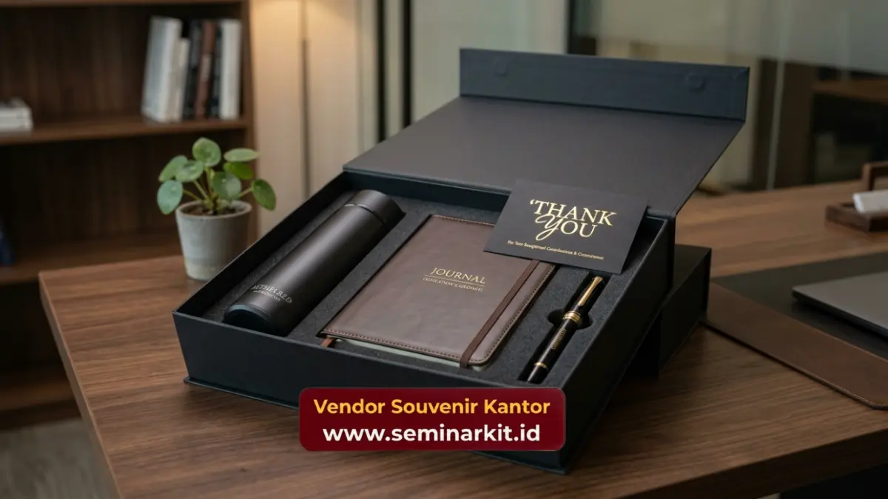

Souvenir kantor untuk karyawan adalah merchandise yang diberikan perusahaan kepada karyawan sebagai bentuk apresiasi atas kontribusi, pencapaian, atau momen tertentu dalam perjalanan kerja mereka.
Pemberian souvenir ini berfungsi memperkuat rasa dihargai, meningkatkan loyalitas, dan menciptakan hubungan emosional yang lebih positif antara karyawan dan perusahaan.
Ketiga fungsi tersebut menjadikan souvenir karyawan sebagai bagian penting dari strategi human resources modern.
- Souvenir kantor untuk karyawan berfungsi sebagai bentuk apresiasi nyata dari perusahaan
- Pemberian souvenir yang tepat waktu mampu meningkatkan motivasi dan loyalitas kerja
- Jenis souvenir perlu disesuaikan dengan kebutuhan fungsional karyawan sehari-hari
- vendorsouvenirkantor.web.id menyediakan berbagai pilihan souvenir karyawan berkualitas siap custom logo perusahaan
Apa Itu Souvenir Kantor untuk Karyawan?
Souvenir kantor untuk karyawan adalah produk merchandise yang diberikan perusahaan kepada karyawan internal sebagai simbol apresiasi, bukan untuk tujuan promosi eksternal.
Berbeda dengan souvenir untuk klien yang berorientasi pada branding ke luar, souvenir karyawan lebih berfokus pada penguatan hubungan internal antara perusahaan dan tenaga kerjanya.
Pemberian souvenir kepada karyawan dapat dilakukan dalam berbagai konteks, mulai dari perayaan hari jadi perusahaan, pencapaian target kerja, hingga momen personal karyawan seperti ulang tahun kerja atau kelahiran anak.
Setiap konteks pemberian umumnya membutuhkan jenis souvenir yang berbeda agar relevan dengan momen tersebut.
Mengapa Souvenir Karyawan Penting bagi Employee Engagement?
Souvenir karyawan penting bagi employee engagement karena mampu menciptakan pengalaman positif yang berkontribusi terhadap rasa memiliki karyawan terhadap perusahaan.
Employee engagement yang tinggi umumnya berkorelasi dengan produktivitas kerja dan tingkat retensi karyawan yang lebih baik.
Souvenir sebagai Simbol Pengakuan
Ketika perusahaan memberikan souvenir sebagai bentuk pengakuan atas kerja keras karyawan, hal ini menciptakan validasi emosional yang memperkuat motivasi kerja.
Karyawan yang merasa diakui kontribusinya cenderung menunjukkan tingkat engagement yang lebih tinggi terhadap pekerjaannya.
Dampak Jangka Panjang terhadap Loyalitas Karyawan
Pemberian souvenir yang konsisten sebagai bagian dari budaya perusahaan turut membangun loyalitas jangka panjang.
Karyawan yang merasa dihargai secara berkelanjutan cenderung memiliki keterikatan emosional yang lebih kuat terhadap perusahaan tempat mereka bekerja.
Kapan Waktu yang Tepat Memberikan Souvenir kepada Karyawan?
Waktu yang tepat memberikan souvenir kepada karyawan meliputi momen perayaan hari jadi perusahaan, pencapaian target kerja tim, penyambutan karyawan baru, serta momen personal karyawan yang signifikan.
Setiap momen memiliki nuansa yang berbeda sehingga jenis souvenir yang dipilih pun perlu disesuaikan.
Pada momen perayaan hari jadi perusahaan, souvenir umumnya berupa merchandise dengan desain khusus yang merepresentasikan pencapaian perusahaan selama periode tertentu.
Pada momen pencapaian target kerja, souvenir lebih sering berupa item fungsional yang dapat digunakan sehari-hari sebagai pengingat atas prestasi yang telah diraih.
Untuk penyambutan karyawan baru, welcome kit berisi kombinasi alat tulis dan merchandise identitas perusahaan menjadi pilihan yang umum digunakan.
Sementara pada momen personal seperti ulang tahun kerja, souvenir yang lebih personal dan bernuansa hangat cenderung memberikan kesan yang lebih berkesan bagi karyawan penerimanya.

Jenis Souvenir Apa yang Paling Sesuai untuk Karyawan?
Jenis souvenir yang paling sesuai untuk karyawan adalah produk fungsional yang dapat digunakan dalam aktivitas kerja sehari-hari, seperti tumbler, alat tulis premium, tas kerja, dan paket hampers berisi kebutuhan personal.
Produk fungsional cenderung memiliki tingkat pemakaian yang lebih tinggi dibanding souvenir dekoratif semata.
Tumbler dan botol minum menjadi pilihan populer karena mendukung gaya hidup sehat sekaligus dapat digunakan setiap hari di lingkungan kerja.
Alat tulis premium seperti notebook custom dan pulpen berkualitas juga banyak dipilih karena relevansinya dengan aktivitas kerja kantoran sehari-hari.
Paket hampers berisi kombinasi produk perawatan diri atau makanan ringan sering digunakan untuk momen perayaan khusus, seperti akhir tahun atau hari besar keagamaan.
Kombinasi produk dalam hampers memberikan kesan yang lebih personal dan variatif dibanding souvenir tunggal.
Berikan Apresiasi Terbaik untuk Karyawan Anda
Souvenir kantor untuk karyawan yang dipilih dengan tepat mampu memberikan dampak positif terhadap motivasi dan loyalitas tim kerja Anda. vendorsouvenirkantor.web.id menyediakan berbagai pilihan souvenir karyawan berkualitas yang dapat disesuaikan dengan momen dan anggaran perusahaan Anda.
Kunjungi vendorsouvenirkantor.web.id untuk mulai merencanakan program apresiasi karyawan perusahaan Anda.
Souvenir kantor untuk karyawan merupakan investasi jangka panjang dalam membangun employee engagement dan loyalitas tim kerja.
Pemilihan jenis produk dan momen pemberian yang tepat menjadi kunci keberhasilan program apresiasi karyawan.
Segera konsultasikan kebutuhan souvenir karyawan perusahaan Anda bersama vendorsouvenirkantor.web.id.

Banner promosi: klik gambar untuk langsung terhubung ke WhatsApp tim sales.